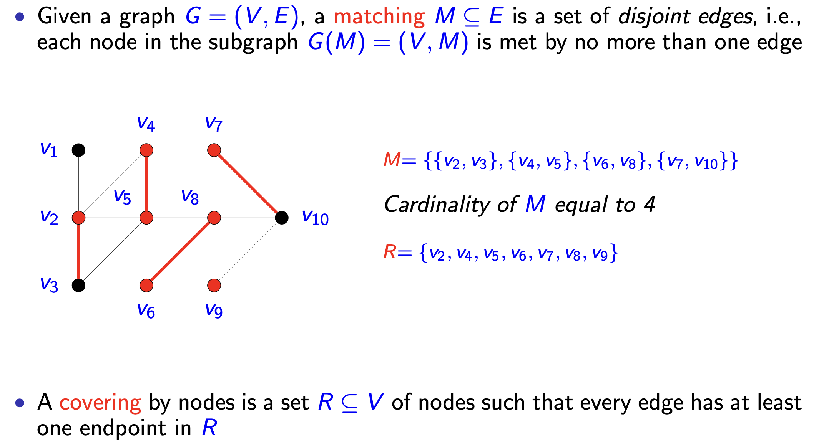
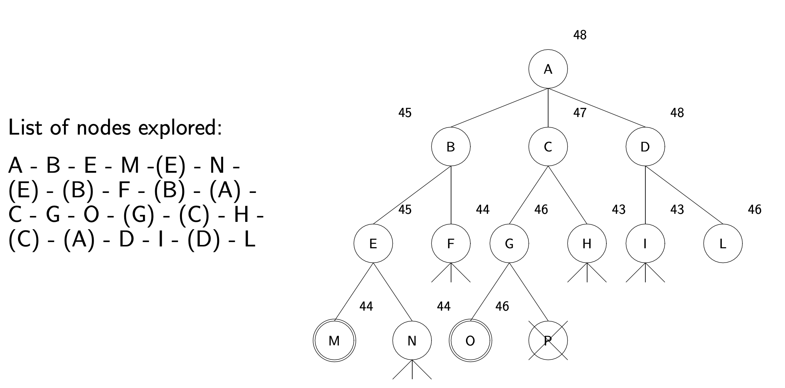
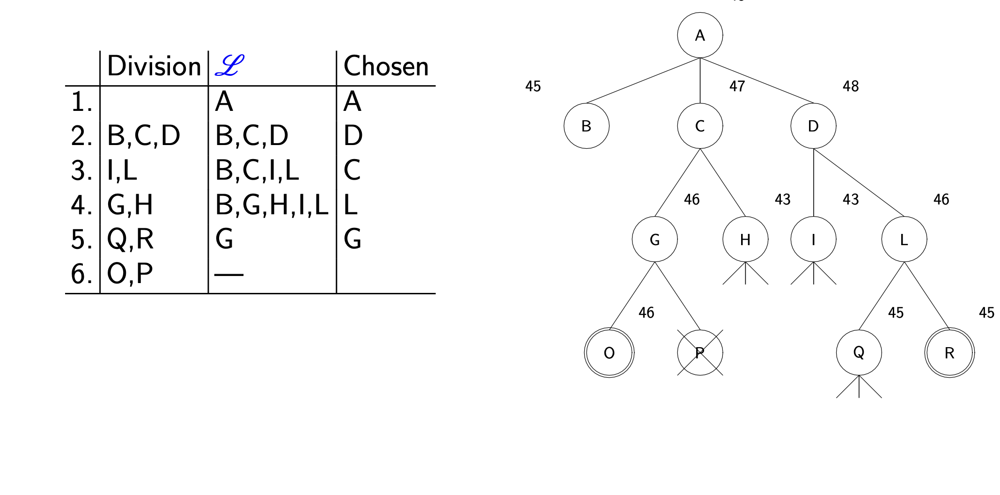
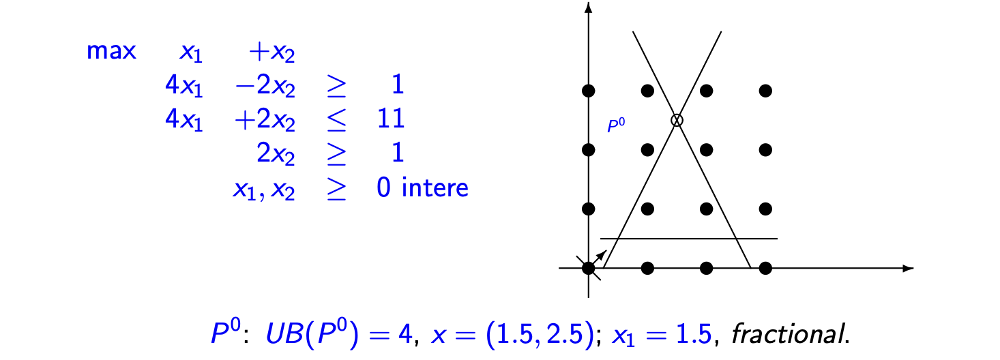
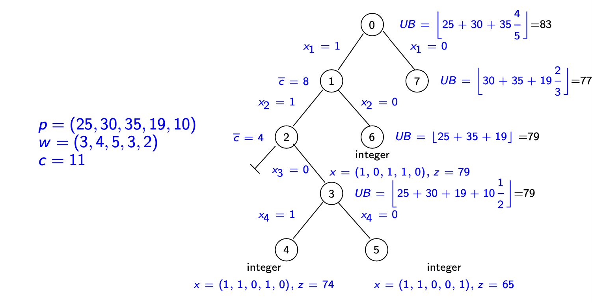

离散优化 Ch_05：从松弛到最优¶
本章概要
详解最优性证明、松弛技术与对偶性原理，深入分支定界算法的剪枝规则与选择策略，附带背包问题和 TSP 的完整应用示例。
1. 最优性、松弛与界 (Optimality, Relaxation and Bounds)¶
1.1 基础概念¶
核心目标
研究如何证明可行解是最优的或接近最优的，并推导寻找最优解的算法。界（bounds）的概念在此语境下至关重要（the notion of bounds is of crucial importance）。
考虑整数规划（IP）的标准形式：
其中 \(X = P \cap \mathbb{Z}^n\)，且 \(P = \{x \in \mathbb{R}_+^n : Ax \geq a\}\)。
上下界与最优性：
- 若给定下界 \(\underline{z} \leq z(IP)\) 和上界 \(z(IP) \leq \overline{z}\)，且满足 \(\overline{z} - \underline{z} \leq \epsilon\)（\(\epsilon > 0\)），则最优函数值被限制在精度 \(\epsilon\) 以内。
- 若 \(\underline{z} = \overline{z}\)，则已找到最优解。
界的分类：
| 类型 | 最小化问题 | 最大化问题 | 获取方法 |
|---|---|---|---|
| 原始界（Primal bounds） | 上界 | 下界 | 启发式算法（Heuristic algorithms） |
| 对偶界（Dual bounds） | 下界 | 上界 | 通过更简单的问题获得 |
获得对偶界的两种主要方式：
- 扩大可行解集（Enlarge the set of feasible solutions），在更大的集合上优化。
- 替换目标函数（Replace the objective function），使其在原问题的定义域上具有相同或更小的值（对于最小化问题）。
1.2 松弛的定义与性质¶
定义 1：松弛 (Relaxation)
给定以下两个优化问题： $$ (IP) \quad z(IP) = \min {c x : x \in X \subseteq \mathbb{R}^n} $$ $$ (RP) \quad z(RP) = \min {f(x) : x \in T \subseteq \mathbb{R}^n} $$
若满足以下条件，则问题 \(RP\) 称为 \(IP\) 的松弛（relaxation）： 1. \(X \subseteq T\)（可行域包含原可行域） 2. \(f(x) \leq c x, \forall x \in X\)（在 \(X\) 上松弛目标函数值不大于原目标函数值）
命题 1：松弛的性质
设 \(RP\) 是 \(IP\) 的松弛，则以下性质成立： 1. \(z(RP) \leq z(IP)\)（松弛最优值提供下界） 2. 若 \(RP\) 不可行，则 \(IP\) 也不可行 3. 若 \(x^*\) 是 \(RP\) 的最优解，且 \(x^* \in X\) 且 \(f(x^*) = cx^*\)，则 \(x^*\) 也是 \(IP\) 的最优解
整数规划中最有用的松弛类型：
| 松弛类型 | 描述 |
|---|---|
| 线性规划松弛（LP-relaxation） | \(z(LP) = \{\min cx : x \in P\}\) |
| 组合松弛（Combinatorial relaxations） | 松弛问题是组合优化问题 |
| 拉格朗日松弛（Lagrangian relaxation） | 基于约束分解（见第 6 讲） |
1.3 线性规划松弛示例：背包问题¶
回顾背包问题（Knapsack Problem, KP）：
其 LP 松弛（将 \(x_j \in \mathbb{B}\) 替换为 \(0 \leq x_j \leq 1\)）无需使用标准线性规划方法求解，可通过贪心算法（greedy algorithm）高效解决：
背包问题 LP 松弛的贪心算法
- 排序：按价值重量比（\(p_i/w_i\) ratios）非递增排序物品。
- 假设：\(p_1/w_1 \geq p_2/w_2 \geq \dots \geq p_n/w_n\)。
- 临界点：令 \(s\) 为满足 \(\sum_{j=1}^{s} w_j \leq c\) 的最大索引。
- 装入前 s 个：完全装入物品 \(1, \ldots, s\)（即 \(x_j = 1, j = 1, \ldots, s\)）。
- 装入部分 s+1：用剩余空间 \(\overline{c} = c - \sum_{j=1}^{s} w_j\) 装入物品 \(s+1\) 的 \(\overline{c}/w_{s+1}\) 单位（即 \(x_{s+1} = \overline{c}/w_{s+1}\)）。
- 其余不装：设置 \(x_j = 0, j = s + 2, \ldots, n\)。
1.4 组合松弛示例：旅行商问题（TSP）¶
回顾旅行商问题（Traveling Salesman Problem）的原始形式：
松弛构造：
- 将约束 (3) 的右端项从 2减少到 1。
- 对所有方程 (2) 求和并除以 2。
- 考虑约束 (2) 中的第一个方程（例如 \(h=1\)）。
得到的整数规划是最小成本 1-树问题（minimum cost 1-tree problem）：
约束：
该问题可分解为两个独立的子问题高效求解（可在多项式时间内求解，can be solved in polynomial time）：
- 在 \(V \setminus \{1\}\) 中寻找最小成本生成树（minimum cost spanning tree）。
- 寻找与图 \(G\) 中顶点 1 关联的两条最小成本边（two smallest cost edges）。
关键洞见：对偶性消除了松弛的缺陷：任意对偶可行解均可给出下界，而非仅松弛问题的最优解。
2. 线性规划中的对偶性 (Duality in Linear Programming)¶
2.1 原问题与对偶问题¶
原问题（Primal）：
对偶问题（Dual）：
其中：
| 符号 | 含义 |
|---|---|
| \(A \in \mathbb{R}^{m \times n}\) | 约束矩阵（constraint matrix） |
| \(b \in \mathbb{R}^m\) | 右端向量（right-hand side vector） |
| \(c \in \mathbb{R}^n\) | 成本向量（cost vector） |
| \(u \in \mathbb{R}^m\) | 对偶变量向量（dual variable vector） |

对偶性的作用
对偶性提供了一种获得问题 \(IP\) 下界（lower bounds）的标准方法。使用松弛获得界的一个明显缺点是，只有松弛问题的最优解才能保证对 \(z(IP)\) 的下界；而对偶性消除了这一困难，因为对偶问题的定义使得任何对偶可行解（any dual feasible solution）都能产生对 \(z(IP)\) 的下界。
3. 整数规划中的对偶性 (Duality in Integer Programming)¶
3.1 弱对偶与强对偶¶
定义 2：弱对偶对 (Weak-dual pair)
以下两个问题： $$ (IP) z(IP) = \min{c(x) : x \in X} \iff (D) z(D) = \max{w(u) : u \in U} $$
若对所有 \(x \in X\) 和 \(u \in U\) 都有 \(c(x) \geq w(u)\)，则它们形成弱对偶对（form a weak-dual pair）。
当 \(z(IP) = z(D)\) 时，它们形成强对偶对（form a strong-dual pair）。
命题 2
整数规划 \(z(IP) = \min\{cx : Ax \geq b, x \in \mathbb{Z}_+^n\}\) 与线性规划 \(z(D) = \max\{ub : uA \leq c, u \in \mathbb{R}_+^m\}\) 形成弱对偶对。
命题 3
设 \(IP\) 和 \(D\) 是弱对偶对： 1. 若 \(D\) 无界（unbounded），则 \(IP\) 不可行。 2. 若 \(x^* \in X\) 和 \(u^* \in U\) 满足 \(c(x^*) = w(u^*)\)，则 \(x^*\) 对 \(IP\) 最优，\(u^*\) 对 \(D\) 最优。
3.2 对偶示例：匹配与节点覆盖¶
匹配（Matching）：
给定图 \(G = (V, E)\)，匹配（matching）\(M \subseteq E\) 是一组不相交的边，即子图 \(G(M) = (V, M)\) 中每个节点至多与一条边相关联。

节点覆盖（Covering by nodes）：
节点覆盖（covering by nodes）是节点集 \(R \subseteq V\)，使得每条边至少有一个端点在 \(R\) 中。
命题 4：弱对偶对
以下两个问题形成弱对偶对： 1. 最大基数匹配问题：\(\max_{M \subseteq E} \{|M| : M \text{ is a matching}\}\) 2. 最小基数节点覆盖问题：\(\min_{R \subseteq V} \{|R| : R \text{ is a covering by nodes}\}\)
证明：
若 \(M = \{(i_1, j_1), \ldots, (i_k, j_k)\}\) 是匹配，则 \(2k\) 个节点 \(\{i_1, j_1, \ldots, i_k, j_k\}\) 互不相同。任何节点覆盖 \(R\) 必须包含每对 \(\{i_s, j_s\}\) 中至少一个节点（\(s = 1, \ldots, k\)）。因此 \(|R| \geq k = |M|\)。
定义 3：节点 - 边关联矩阵 (Node-edge incidence matrix)
图 \(G = (V, E)\) 的节点 - 边关联矩阵是一个 \(n = |V|\) 行 \(m = |E|\) 列的 0-1 矩阵 \(A\)，其中 \(a_{je} = 1\) 当且仅当节点 \(j\) 是边 \(e\) 的端点，否则 \(a_{je} = 0\)。
整数规划表述：
与强对偶的差距：
考虑对应 LP 松弛的值 \(z^{LP}\) 和 \(w^{LP}\)，有 \(z \leq z^{LP} = w^{LP} \leq w\)。
但整数规划问题之间不存在强对偶：
- 反例：\(G = (\{1,2,3\}, \{\{1,2\}, \{1,3\}, \{2,3\}\})\)（三角形）
- \(z = 1\)（最大匹配大小为 1），\(w = 2\)（最小节点覆盖大小为 2）
- 但 LP 松弛可行解：\(x_{\{1,2\}} = x_{\{1,3\}} = x_{\{2,3\}} = 1/2\) 和 \(y_1 = y_2 = y_3 = 1/2\)
- 因此 \(z^{LP} = w^{LP} = 3/2\)
4. 枚举方法 (Enumerative Methods)¶
4.1 概述¶
枚举法和启发式法用于求解离散优化问题（精确或近似）。分支定界（Branch and bound）和分支切割（branch and cut）方法是商业求解器中用于整数优化的主要方法，结合了枚举和定界技术。
动态规划方法使用隐式枚举，通常比显式枚举导致更好的复杂度结果（见第 7 讲）。
核心原则
获得紧的界（tight bounds）是枚举方法中最重要的方面。
4.2 分支定界法 (Branch and Bound)¶
分支定界使用分治（divide and conquer）方法探索可行整数解集合，利用最优成本的界来避免探索可行解集的某些部分。
考虑问题：
命题 5：分治 (divide and conquer)
设 \(S = S^1 \cup S^2 \cup \cdots \cup S^k\)（\(i = 1, \ldots, k\)）是 \(S\) 的分解，令 \(z^i = \min \{c x : x \in S^i\}\)。则： $$ z = \min {z^i : i = 1, \ldots, k} $$
将原问题划分为子问题称为分支（branching）。递归分解可表示为枚举树（enumeration tree）。
命题 6：定界传播
设 \(S = S^1 \cup S^2 \cup \cdots \cup S^k\) 且 \(z^i = \min \{cx : x \in S^i\}\)。假设给定 \(\underline{z}^i\) 和 \(\overline{z}^i\) 满足 \(\underline{z}^i \leq z^i \leq \overline{z}^i\)（\(i = 1, \ldots, k\)）。则对于 \(z = \min \{z^i : i = 1, \ldots, k\}\) 有： $$ \underline{z} \leq z \leq \overline{z} $$ 其中： - \(\underline{z} = \min \{\underline{z}^i : i = 1, \ldots, k\}\) 是下界 - \(\overline{z} = \min \{\overline{z}^i : i = 1, \ldots, k\}\) 是上界
4.3 剪枝规则 (Pruning Rules)¶
基于上述命题，可推导出剪枝枚举树的规则：
| 规则 | 条件 | 动作 |
|---|---|---|
| 最优性剪枝（Pruning by optimality） | \(\underline{z}^i = \overline{z}^i\) | 第 \(i\) 个子问题的最优解值已知，无需细分 \(S^i\) |
| 界剪枝（Pruning by bound） | \(\underline{z}^i > \overline{z}^j\)（\(i \neq j\)） | 第 \(i\) 个子问题的最优解不可能是整体最优，无需细分 \(S^i\) |
| 不可行性剪枝（Pruning by infeasibility） | \(S^i = \emptyset\) | 无需细分 \(S^i\) |
4.4 通用分支定界算法¶
设 \(P^0\) 是定义在 \(S\) 上的初始问题，\(\mathcal{L}\) 表示待处理问题集合。
分支定界算法步骤
步骤 1. 初始化：\(\mathcal{L} = \{P^0\}\)，\(S^0 = S\)，\(\underline{z}^0 = -\infty\)，\(\overline{z} = \infty\)（当前最优值）。
步骤 2. 终止测试：若 \(\mathcal{L} = \emptyset\)，则产生 \(\overline{z} = cx^*\) 的解 \(x^*\) 是最优的。
步骤 3. 问题选择与松弛：选择 \(P^i \in \mathcal{L}\)，设置 \(\mathcal{L} = \mathcal{L} \setminus \{P^i\}\)。求解其松弛 \(RP^i\)，令 \(z_R^i\) 和 \(x_R^i\) 分别为最优值和最优解（如果存在）。
步骤 4. 不可行性剪枝：若 \(S^i = \emptyset\)，返回步骤 2。
步骤 5. 界剪枝： - 若 \(z_R^i \geq \overline{z}\)，返回步骤 2。 - 若 \(x_R^i \notin S^i\)，转到步骤 6。 - 若 \(x_R^i \in S^i\) 且 \(cx_R^i < \overline{z}\)，令 \(\overline{z} = cx_R^i\)。从 \(\mathcal{L}\) 中删除所有满足 \(\underline{z}^i > \overline{z}\) 的问题。若 \(cx_R^i = z_R^i\)，返回步骤 2。
步骤 6. 分支：设 \(\{S^{ij}\}_{j=1}^k\) 是 \(S^i\) 的划分。将问题 \(\{P^{ij}\}_{j=1}^k\) 加入 \(\mathcal{L}\)，其中 \(\underline{z}^{ij} = z_R^i\)（\(j = 1, \ldots, k\)）。返回步骤 2。
4.5 搜索树 (Search Tree)¶
- 树的每个节点代表一个子问题。
- 每个子问题链接到其父节点，并最终链接到其子节点。
- 尚未考虑的子问题称为候选处理对象（candidate for processing）。
- 候选处理对象的集合称为候选列表（candidate list）（例如集合 \(\mathcal{L}\)）。
5. 分支定界中的选择策略 (Choices in Branch and Bound)¶
5.1 搜索策略 (Search Strategies)¶
选择下一个处理问题的规则称为搜索策略（search strategy）。目标可能是：
- 最小化找到可证明最优解所需的时间。
- 在有限时间内找到最好的可能解。
主要搜索策略：
| 策略 | 描述 | 优点 | 缺点 |
|---|---|---|---|
| 最优优先（Best First） | 选择具有最佳界（最小下界）的子问题 | 通常最小化枚举树大小 | 可能内存使用大，节点设置成本高 |
| 深度优先（Depth First） | 选择最深的节点 | 节省内存，更快找到可行解 | 通常导致更大的枚举树 |
| 基于估计的策略 | 使用启发式估计选择节点 | 平衡探索与利用 | 需要设计估计函数 |
| 混合策略（Hybrid Strategy） | 结合多种策略 | 灵活适应不同问题 | 实现复杂度较高 |
示例比较：

深度优先探索顺序：A - B - E - M - (E) - N - (E) - (B) - F - (B) - (A) - C - G - O - (G) - (C) - H - (C) - (A) - D - I - (D) - L
最优优先探索顺序表格：
| 步骤 | 分支 | 候选列表 \(\mathcal{L}\) | 选择 |
|---|---|---|---|
| 1 | A | A | |
| 2 | B,C,D | B,C,D | D |
| 3 | I,L | B,C,I,L | C |
| 4 | G,H | B,G,H,I,L | L |
| 5 | Q,R | B,G,H,I,Q,R | G |
| 6 | O,P | B,H,I,O,P,Q,R | ... |

5.2 分支策略 (Branching)¶
对于整数规划，将问题划分为 \(k\) 个子问题通过逻辑析取（logical disjunctions）描述，即形如以下的约束：
若 \(\bigcup_{1\leq i\leq k}X_i\supset S\)，则析取 \(\{X_i\}_{i=1}^k\) 对可行集为 \(S\) 的问题是有效的（valid）。
理想情况下 \(\bigcup_{1\leq i\leq k}X_i = S\) 且 \(X_i \cap X_j = \emptyset\)（\(i \neq j\)）。
两种主要分支类型：
- 超平面分支（Branching on Hyperplanes）：
使用给定超平面划分可行域。当 \(S \subseteq \mathbb{Z}^n\) 时，由整数超平面 \(\pi x\)（\(\pi \in \mathbb{Z}^n\)）定义的析取是有效的（当 \(\alpha \in \mathbb{Z}\)）： $$ X_1 = {x \in \mathbb{R}^n : \pi x \geq \alpha} \text{ 和 } X_2 = {x \in \mathbb{R}^n : \pi x \leq \alpha - 1} $$
- 变量分支（Branching on Variables）：
对变量 \(x_j\) 的界限约束进行分支。在二元整数规划（Binary Integer Programming）的特殊情况下，有效的析取是 \(x_j = 0\) 或 \(x_j = 1\)。
分支选择方法（估计分支效果）：
- 伪成本分支（Pseudocost Branching）
- 强分支（Strong Branching）
- 可靠性分支（Reliability Branching）
- 局部分支（Local Branching）
6. 基于 LP 的分支定界示例 (LP-Based Branch and Bound)¶
6.1 通用设置¶
| 组件 | 设置 |
|---|---|
| 定界 | LP 松弛 |
| 策略 | 最优优先（Best First） |
| 分支 | 选择非整数的 \(x_j > 0\)，设置：\(S^1 = S \cap \{x : x_j \leq \lfloor x_j \rfloor\}\)，\(S^2 = S \cap \{x : x_j \geq \lceil x_j \rceil\}\) |
6.2 具体示例¶
问题：

节点展开过程：
| 节点 | 上界 | 解 | 分数变量 | 分支 |
|---|---|---|---|---|
| \(P^0\) | \(UB(P^0) = 4\) | \(x = (1.5, 2.5)\) | \(x_1 = 1.5\) | 分支 1 & 2 |
| \(P^1\) | \(UB(P^1) = 2.5\) | \(x = (1, 1.5)\) | \(x_2 = 1.5\) | 分支 3 & 4 |
| \(P^2\) | \(UB(P^2) = 3.5\) | \(x = (2, 1.5)\) | \(x_2 = 1.5\) | 继续分支 |
| \(P^3\) | \(UB(P^3) = 3.25\) | \(x = (2.25, 1)\) | \(x_1 = 2.25\) | 继续分支 |
| \(P^4\) | 不可行 | - | - | 剪枝 |
完整枚举树（生成\(P^5\)和\(P^6\)后）：
7. 背包问题的分支定界 (Branch and Bound for the Knapsack Problem)¶
| 组件 | 设置 |
|---|---|
| 定界 | LP 松弛（贪心算法计算） |
| 策略 | 深度优先（Depth First） |
| 分支 | 选择非整数的 \(x_j > 0\)，设置：\(S^1 = S \cap \{x : x_j = 1\}\)，\(S^2 = S \cap \{x : x_j = 0\}\) |
枚举树结构：

数值示例：
- 价值 \(p = (25, 30, 35, 19, 10)\)
- 重量 \(w = (3, 4, 5, 3, 2)\)
- 容量 \(c = 11\)
节点计算：
| 节点 | 条件 | 上界计算 | 结果 |
|---|---|---|---|
| 节点 0 | 初始 | \(UB = \lfloor 25 + 30 + 35 \cdot \frac{4}{5} \rfloor\) | \(83\) |
| 节点 7 | \(x_1=0\) | \(UB = \lfloor 30 + 35 + 19 \cdot \frac{2}{3} \rfloor\) | \(77\) |
| 节点 6 | \(x_1=1, x_2=0\) | \(UB = \lfloor 25 + 35 + 19 \rfloor\) | \(79\)，整数解 \(x=(1,0,1,1,0), z=79\) |
| 节点 3 | \(x_1=1, x_2=1, x_3=0\) | \(UB = \lfloor 25 + 30 + 19 + 10 \cdot \frac{1}{2} \rfloor\) | \(79\) |
8. TSP 的分支定界 (Branch and Bound for the TSP)¶
基于 1-树松弛（1-tree relaxation）。
符号：用弧集 \(E_k\)（排除）和 \(I_k\)（包含）描述子问题 \(k\) 的解。
- \(x_{ij} = 1\) 若 \(\{i,j\} \in I_k\)
- \(x_{ij} = 0\) 若 \(\{i,j\} \in E_k\)
子问题 \(k\) 的松弛在 1-树松弛约束之外增加上述约束定义。
分支规则 1
选择条件：选择度数不为 2 的顶点 \(i\)，选择当前 1-树中与 \(i\) 关联的最大成本边 \(\{i,j\}\)。
生成两个新子问题： - \(k1\)：\(E_{k1} = E_k \cup \{\{i,j\}\}\)，\(I_{k1} = I_k\)（排除该边） - \(k2\)：\(E_{k2} = E_k\)，\(I_{k2} = I_k \cup \{\{i,j\}\}\)（包含该边）
注意：节点 \(k\) 的最小 1-树对子问题 \(k2\) 仍可行。
分支规则 2
选择条件：选择度数超过 2 的顶点 \(i\)，选择两条自由边（不在 \(I_k\) 中）\(\{i,j_1\}, \{i,j_2\}\)。
生成三个新子问题： - \(k1\)：\(E_{k1} = E_k \cup \{\{i,j\} : j \notin \{j_1,j_2\}\}\)，\(I_{k1} = I_k \cup \{\{i,j_1\}, \{i,j_2\}\}\)（强制包含这两条） - \(k2\)：\(E_{k2} = E_k \cup \{\{i,j_2\}\}\)，\(I_{k2} = I_k \cup \{\{i,j_1\}\}\)（包含\(j_1\)排除\(j_2\)） - \(k3\)：\(E_{k3} = E_k \cup \{\{i,j_1\}\}\)，\(I_{k3} = I_k\)（排除\(j_1\)）
注意：若 \(i\) 与 \(I_k\) 中的边关联，则不生成节点 \(k1\)。节点 \(k\) 的 1-树对每个后继节点都不可行。
9. 分支定界：补充主题 (Additional Topics)¶
预处理（Preprocessing）¶
在求解线性或整数规划前，应使形式尽可能强。可通过以下规则强化：
| 规则 | 描述 |
|---|---|
| 收紧界（Tightening Bounds） | 通过逻辑推导收紧变量上下界 |
| 冗余约束（Redundant Constraints） | 识别并移除不影响可行域的约束 |
| 变量固定（Variable Fixing） | 基于界分析固定某些变量的值 |
平衡策略¶
核心权衡
总求解时间 = 枚举节点数 × 每个节点处理时间
定界的目标是在界强度与计算效率之间取得平衡（achieve a balance between the strength of the bound and the efficiency with which it can be computed）。
启发式原始界¶
在根节点和枚举树的不同节点使用启发式方法寻找原始界（primal bounds）也是分支定界方法的关键方面。
10. 注释与参考文献 (Notes and References)¶
| 主题 | 参考文献 |
|---|---|
| LP-based branch and bound | Nemhauser and Wolsey [4, Section II.4.2]；对偶单纯形算法进行再优化 [4, chap. 7.3] |
| TSP 的分支定界方法 | Lawler [3, chap. 10]；强分支技术见 Applegate et al. [1] |
| 预处理规则 | Nemhauser and Wolsey [4, Section I.1.6] 和 Wolsey [5, chap. 7.6] |
11. 参考文献 (Bibliography)¶
- Applegate, D. L., Bixby, R. E., Chvatal, V., & Cook, W. J. (2007). The Traveling Salesman Problem: A Computational Study (Princeton Series in Applied Mathematics). Princeton University Press.
- Bazaraa, M. S., Jarvis, J. J., & Sherali, H. F. (2010). Linear Programming and Network Flows (4th ed.). John Wiley & Sons.
- Lawler, E. (1985). The Traveling Salesman Problem: A Guided Tour of Combinatorial Optimization. Wiley.
- Nemhauser, G. L., & Wolsey, L. A. (1988). Integer and combinatorial optimization. Wiley-Interscience.
- Wolsey, L. A. (1998). Integer programming. Wiley-Interscience.